Questão 1 · Rítmo Cardíaco · 4000186647Lactente, 4 meses, é levado à emergência pediátrica pela mãe, que relata tê-lo encontrado desacordado, cianótico e não responsivo. Ao exame físico, evidencia-se ausência de pulso central. Imediatamente são iniciadas compressões torácicas, abertura de vias aéreas e ventilação. Ao constatar _______________, a conduta mais apropriada é _______________.
A taquicardia ventricular - aplicar adenosina de imediato.
B assistolia - concluir o ciclo de dois minutos e aplicar adrenalina.
C atividade elétrica sem pulso - aplicar adrenalina o mais rápido possível.
D fibrilação ventricular - aplicar adrenalina e, posteriormente, realizar desfibrilação.
Questão 2 · Taquicardia Supraventricular TSV · 4000185953Pré-escolar, sexo feminino, 4 anos de idade, apresenta quadro de tosse e febre há 1 dia. Hoje mãe notou que ela estava mais prostrada e reclamando de dor torácica, então resolveu levá-la ao pronto atendimento. Na triagem, notado frequência cardíaca de 234 bpm, sendo encaminhada diretamente à sala de emergência. Na avaliação, apresenta pulso central presente e ritmo respiratório regular. Apresenta vias aéreas pérvias, frequência respiratória de 26 irpm, saturação de oxigênio de 96%. Oferecido oxigênio em máscara não-reinalante, com aumento da saturação para 100%. Obtido acesso venoso e instalada monitorização, com frequência cardíaca de 228 bpm, pressão arterial de 80 x 58 mmHg. Pulsos periféricos nos e rápidos, tempo de enchimento capilar de 2 segundos, glicemia capilar de 98 mg/dL. Aplicado gelo em face, sem mudança dos parâmetros. Realizado eletrocardiograma conforme imagem abaixo. Assinale a alternativa que contém a melhor opção para continuidade das condutas preconizadas:

A Administrar adenosina endovenosa.
B Iniciar compressões torácicas.
C Realizar desfibrilação.
D Infundir soro fisiológico 20 mL/kg.
E Transferir para serviço cardiológico de referência.
Questão 3 · Causas de PCR · 4000184783Menino, 4 anos, é admitido no Setor de Emergência em parada cardiorrespiratória. Iniciaram-se imediatamente as manobras de reanimação cardiopulmonar com massagem cardíaca externa, assistência ventilatória e acesso venoso. Pode-se a rmar, nesta situação, que:
A em caso de bradicardia persistente, deve-se detectar e tratar os fatores predisponentes, como, por exemplo, hipoxemia, acidose, hipomagnesemia e hipoglicemia.
B as compressões torácicas devem ser de ao menos 1/3 do diâmetro anteroposterior do tórax, mínimo de 60 compressões/minuto, na proporção de 15 compressões para 2 ventilações.
C a parada cardíaca em crianças é mais frequentemente o resultado final de asfixia progressiva.
D assistolia e atividade elétrica sem pulso são os ritmos cardíacos chocáveis mais frequentes.
Questão 4 · Corpo EstranhoEngasgo · 4000184344Menina, 10m, é trazida à Emergência por ter apresentado quadro súbito de acesso de tosse e cansaço. Nega febre e coriza. Exame físico: bom estado geral; T=36,5ºC; FR=62irmp; FC=110bpm; pulsos cheios; perfusão periférica=2 segundos; oximetria de pulso= 91% (ar ambiente); batimento de asa nasal; retração intercostal; pulmões: murmúrio vesicular presente, com roncos disseminados bilateralmente; coração: bulhas rítmicas normofonéticas sem sopros. DIAGNÓSTICA É:
A Aspiração de corpo estranho.
B Bronquiolite viral aguda.
C Laringite aguda.
D Pneumotórax espontâneo.
Questão 5 · Manejo da Via Aérea · 4000184343Na condução da parada cardiorrespiratória em assistolia com via aérea definitiva de um lactente de três meses, FREQUÊNCIA DE COMPRESSÕES TORÁCICAS E DE VENTILAÇÃO É, RESPECTIVAMENTE:
A 100-120 compressões/min assíncronas e 1 ventilação a cada 2-3 segundos.
B 100-110 compressões/min síncronas para cada ventilação.
C 110-120 compressões/min assíncronas e 1 ventilação a cada 6 segundos.
D 100-120 compressões/min síncronas para cada 4 ventilações.
Questão 7 · Manobra do Desengasgo · 4000183708Emergências Pediátricas Parada Cardiorrespiratória PCR e Arritmias na Emergência Com relação à reanimação cardiorrespiratória (RCP) em pediatria, deve(m)-se
A realizar rápida desfibrilação elétrica em paciente com atividade elétrica sem pulso.
B manter compressões torácicas a uma frequência de 80 a 100 batimentos por minuto.
C iniciar RCP no paciente com pulso < 60 bpm e sinais de hipoperfusão, que não responderam à ventilação com pressão positiva.
D iniciar 1 ventilação a cada 6 segundos no paciente com pulso e ventilação inadequada.
E iniciar manobra de Heimlich no paciente inconsciente com obstrução de via aérea superior.
Questão 8 · Suporte Avançado de Vida · 4000183638Uma criança de 3 anos de idade, vitima de atropelamento, é levada ao PS, inconsciente. Dois médicos plantonistas iniciam o atendimento, garantindo as vias aéreas e realizando as compressões torácicas. As compressões torácicas recomendadas pela American Heart Association
A 1/2 do diâmetro anteroposterior e deve-se manter relação compressão: ventilação de 30:2.
B 1/2 do diâmetro anteroposterior e deve-se manter o ritmo 20 a 30 respirações/min.
C 1/3 do diâmetro anteroposterior e deve-se manter relação compressão: ventilação de 30:2.
D 1/3 do diâmetro anteroposterior e deve-se manter o ritmo de 30 a 40 respirações/min.
E 1/3 do diâmetro anteroposterior e deve-se manter o ritmo de 20 a 30 respirações/min.
Questão 9 · Rítmo Cardíaco · Terapia Farmacológica · 4000183479Uma pré-escolar de 4 anos, peso 15 kg, internada em enfermaria de cardiologia pediátrica, portadora de uma cardiopatia congênita, evoluiu com piora grave do desconforto respiratório. Pediatra de plantão, após avaliação clínica e análise de gasometria arterial, decide pela intubação orotraqueal e instalação de ventilação mecânica assistida. Na sequência, a menor evoluiu com parada cardiorrespiratória (PCR). Em relação à PCR, analise as assertivas abaixo: I. Caso o monitor demonstre assistolia, a dose de epinefrina endovenosa, na diluição 1:1000, deverá ser de 0,1 ml por quilo de peso da menor. II. Se o monitor evidenciar uma taquicardia ventricular e a menor estiver sem quaisquer pulsos palpáveis, está indicado, de imediato, o uso de epinefrina, na diluição 1:1000, na dose de 0,1 ml por quilo de peso da menor. III. Uma vez que o monitor demonstre que a menor está em brilação ventricular, deve-se realizar a cardioversão numa carga de 1,5 J/Kg de peso da menor. Podemos afirmar que
A todas estão corretas.
B todas estão incorretas.
C existe apenas uma correta.
D existe apenas uma incorreta.
E a II está correta.
Questão 10 · Acesso Vascular · 4000183246Assinale a alternativa que apresenta um local preconizado para a passagem de um acesso intraósseo.
A cabeça do fêmur
B fêmur proximal
C maléolo lateral
D esterno
E fíbula
Questão 11 · Emergências Pediátricas Parada Cardiorrespiratória PCR e Arritmias na Emergência · Pediatria · 4000183245Um paciente de oito meses de idade, previamente hígido, está internado devido a um quadro de bronquiolite. No leito, observou-se que o paciente estava arresponsivo e foi chamada ajuda. Identi cou-se que o paciente apresentava pulso central com frequência cardíaca de 40 bpm. Nesse caso clínico, a conduta inicial mais adequada é
A iniciar, imediatamente, ressuscitação cardiopulmonar.
B administrar, imediatamente, adrenalina endovenosa.
C fazer passagem de marcapasso transcutâneo.
D administrar, imediatamente, atropina endovenosa.
E iniciar ventilação com bolsa-válvula-máscara.
Questão 12 · Pediatria · Arritmias · 4000182983Menino de 1 ano, assintomático é encaminhado para avaliação cardiológica devido a alteração detectada na ausculta cardíaca. Eletrocardiograma (imagem). O paciente apresenta:

A arritmia sinusal.
B ritmo sinusal alternando com ritmo atrial ectópico.
C extrassístoles supraventriculares.
D extrassístoles ventriculares.
Questão 13 · Emergências Pediátricas · 4000182623Emergências Pediátricas Parada Cardiorrespiratória PCR e Arritmias na Emergência Menino, 4 anos de idade, foi resgatado pelo pai da piscina de casa, segundo a família, com menos de 3 minutos de submersão. Recebeu compressões cardíacas e respiração boca a boca com retorno da consciência. Chega ao Pronto Socorro com Glasgow 14, FC = 140 bpm, FR = 30 mrm e Sat O₂ = 89%. Foi ofertado oxigênio em máscara com reservatório, chegando a Sat O₂ = 92%. O restante do exame está sem alterações, sem sinais de comprometimento neurológico. A conduta a ser realizada a seguir é:
A intubação orotraqueal em sequência rápida.
B sedação e punção de acesso venoso central.
C realização de tomografia de tórax e administração de antibiótico.
D monitoração cardíaca e correção da hipovolemia.
E aquecimento até temperatura corporal de 37 ºC em leito de UTI.
Questão 14 · Pediatria · Suporte Avançado de Vida · 4000181291Segundo as diretrizes mais recentes sobre a alta qualidade da reanimação, durante uma reanimação cardiopulmonar de uma criança de 6 anos, em uma enfermaria de pediatria, após a obtenção de uma via aérea avançada (intubação), qual deve ser a relação de compressões e ventilações com o dispositivo bolsa-valva-cânula, quando existem dois reanimadores?
A 15 compressões e depois 2 ventilações.
B 15 compressões e depois 1 ventilação.
C 30 compressões e depois 2 ventilações.
D 30 compressões e depois 1 ventilação.
E Compressões (100 a 120/min) e ventilações (1 cada 2-3 seg), independentes e sem interrupções.
Questão 15 · Taquicardia Supraventricular TSV · Arritmias · 4000191015Lactente, 5 meses, é atendido em pronto-socorro pediátrico, com queixa materna de estar hipoativo e “mamando menos”. Está pálido, pouco responsivo, com cianose labial e de extremidades. No exame físico, está afebril, com diminuição do nível de consciência, com frequência respiratória de 68 movimentos/minuto e oximetria evidenciando saturação de O₂ de 85%. PA inaudível. Os pulsos periféricos são nos e o tempo de enchimento capilar de 5 segundos. Um eletrocardiograma é obtido: frequência cardíaca (checada no monitor) de 234 batimentos/minuto, QRS estreito, ritmo regular e di culdade de visualização da onda P.O diagnóstico e a próxima conduta são, respectivamente,
A taquicardia sinusal; analgésico.
B taquicardia supraventricular; massagem carotídea.
C taquicardia ventricular; cardioversão sincronizada.
D taquicardia ventricular; adenosina.
E taquicardia supraventricular; cardioversão sincronizada.
Questão 16 · Taquiarritmias · Eletrocardiograma ECG · Taquicardia Supraventricular TSV · 4000175228Escolar de seis anos, sexo masculino, é trazido à emergência no colo da mãe que refere que seu lho “está morrendo”. Relata que a criança “subitamente cou muito branca e suando frio, além de ter desmaiado”. Exame físico: torporoso, reagindo pouco às solicitações verbais, palidez cutânea, pele mosqueada, diaforese, pulsos nos, enchimento capilar: 4 segundos, SatO2: 90%. De acordo com o quadro clínico descrito e o ECG abaixo, a conduta imediata é:
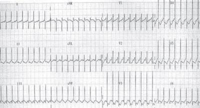
A adenosina IV em “bolus”
B cardioversão sincronizada
C amiodarona IV lentamente
D procainamida IV em “bolus”
E soro fisiológico IV em 10 minutos
Questão 17 · Emergências Pediátricas Parada Cardiorrespiratória PCR e Arritmias na Emergência · 4000173580Considere a seguinte situação: Criança de 3 anos de idade em parada cardiorrespiratória (PCR), em ambiente hospitalar, com via aérea avançada assegurada. De acordo com o Guia da American Heart Association (AHA) 2020, sobre as recomendações para ressuscitação cardiopulmonar (RCP) em pediatria, assinale a alternativa CORRETA em relação às compressões torácicas e frequência de ventilação que devem ser instituídas.
A A relação entre compressão-ventilação deverá ser de 15:2.
B A relação entre compressão-ventilação deverá ser de 10:2.
C A relação entre compressão-ventilação deverá ser de 3:1.
D Administrar compressões contínuas e uma ventilação a cada 5 segundos.
E Administrar compressões contínuas e uma ventilação a cada 2 ou 3 segundos.
Questão 18 · Emergências Pediátricas Parada Cardiorrespiratória PCR e Arritmias na Emergência · Pediatria · 4000170594Suporte Avançado de Vida Uma criança de três anos de idade foi internada, em unidade de terapia intensiva pediátrica, para tratamento de pneumonia e choque séptico, em ventilação mecânica, com acesso venoso central e com drogas vasoativas. Evoluiu com parada cardiorrespiratória em assistolia. Com base nesse caso hipotético, assinale a alternativa que apresenta a melhor sequência de atendimento para o paciente, considerando que há vários colegas para ajudar no atendimento.
A epinefrina imediatamente e iniciar reanimação cardiopulmonar por 2 minutos, com relação compressão- ventilação 15:2
B epinefrina imediatamente e iniciar reanimação cardiopulmonar por 2 minutos, com relação compressão- ventilação 30:2
C epinefrina imediatamente e iniciar reanimação cardiopulmonar por 2 minutos, com cem a 120 compressões por minuto contínuas, e uma ventilação a cada 2 a 3 segundos
D reanimação cardiopulmonar por 2 minutos, com relação compressão-ventilação 15:2 e, após 2 minutos, se houver persistência da PCR em assistolia, aplicar epinefrina
E reanimação cardiopulmonar por 2 minutos, com relação compressão-ventilação 30:2 e, após os 2 minutos, se houver persistência da PCR em assistolia, aplicar epinefrina
Questão 19 · Pediatria · Corpo EstranhoEngasgo · 4000169503Lactente com oito meses, ao aspirar corpo estranho, apresenta dificuldade para respirar, cianose perioral e fácies pletóricas. Não consegue emitir sons nem choro. Nessa situação, qual a conduta mais adequada?
A Colocar o dedo na boca da criança para tentar tirar o corpo estranho.
B Fazer a manobra de Heimlich, ou seja, golpes no abdômen até que a criança volte a respirar.
C Realizar respiração artificial e compressões torácicas.
D Aplicar cinco golpes nas costas e cinco compressões torácicas, repetindo essa sequência se o corpo estranho não for eliminado.
Questão 20 · Emergências Pediátricas Parada Cardiorrespiratória PCR e Arritmias na Emergência · Pediatria · 4000168276Assinale a alternativa que contempla a sequência correta no atendimento de uma criança em parada cardiorrespiratória (PCR) testemunhada, de acordo com as Diretrizes para Ressuscitação Cardiopulmonar, da American Heart Association (2020).
A Abrir via aérea, fazer respiração artificial, iniciar compressões torácicas e chamar socorro avançado.
B Avaliar a segurança do local, posicionar a criança em superfície rígida, abrir via aérea, fazer respiração artificial, iniciar compressões torácicas e chamar socorro avançado.
C Avaliar a segurança do local, chamar socorro avançado, posicionar a criança em superfície rígida, iniciar compressões torácicas, abrir via aérea e fazer respiração artificial.
D Chamar socorro avançado, posicionar a criança em superfície rígida, abrir via aérea, fazer respiração artificial e iniciar compressões torácicas.
Questão 21 · Pediatria · Arritmias · 4000168259Paciente com 38 semanas de gestação, sem acompanhamento pré-natal, foi trazida à Emergência Obstétrica por sinais de trabalho de parto em evolução. A cardiotocogra a revelou frequência cardíaca de 60 bpm, sem outras manifestações. A ultrassonogra a obstétrica à beira do leito mostrou um bebê bem desenvolvido, sem sinais de alarme. Devido à bradicardia, foi indicada interrupção do parto, sendo o recém-nascido atendido na Sala de Parto. À exceção da frequência cardíaca baixa, o exame clínico foi normal, com escore de Apgar 9/9. O eletrocardiograma demonstrou bloqueio atrioventricular total. Sobre esse bloqueio de apresentação fetal e neonatal, assinale a assertiva correta.
A Bradicardia fetal persistente não justifica a investigação de bloqueio atrioventricular ao nascimento.
B É pouco frequente que a primeira manifestação de lúpus, artrite reumatoide, síndrome de Sjögren ou esclerose múltipla na gestação esteja relacionada ao diagnóstico de um bloqueio atrioventricular ainda durante a vida fetal.
C Hidropsia fetal é incomum nas formas graves, não sendo um marcador de mau prognóstico.
D Pode ocorrer sem lesões cardíacas estruturais associadas, sendo usualmente secundário à presença de colagenose materna, com ou sem expressão clínica.
Questão 23 · Emergências Pediátricas Parada Cardiorrespiratória PCR e Arritmias na Emergência · Pediatria · 4000167371Lactente, 3 m , é trazida pe lo s familiares inconsciente, e m apneia e hipotônica. PARA AVALIAÇÃO DE PARADA CARDIORESPIRATÓRIA, O PULSO A SER EXAMINADO É:
A Carotídeo.
B Pedioso.
C Radial.
D Braquial.
Questão 24 · Emergências Pediátricas Parada Cardiorrespiratória PCR e Arritmias na Emergência · Pediatria · 4000164717Diante de uma reanimação cardiopulmonar em Pediatria, podemos presenciar situações diversi cadas. Assinale a alternativa correta em relação ao assunto.
A Amiodarona e lidocaína são drogas que podem ser usadas em situações de assistolia, quando o paciente não responde à epinefrina.
B A partir do momento em que intubamos o paciente a frequência de ventilação passa a ser de 10 ventilações por minuto.
C Tanto nas paradas cardíacas com ritmos chocáveis quanto naquelas com ritmos não chocáveis, há a possibilidade de uma causa reversível estar impedindo o êxito da ressuscitação.
D Em situações de ritmos chocáveis (fibrilação ventricular e taquicardia supraventricular), deve-se imediatamente fazer a desfibrilação do paciente com a dose de 2 joules/kg.
E As compressões devem ser realizadas de maneira contínua na frequência de 100-140 por minuto.
Questão 25 · Emergências Pediátricas Parada Cardiorrespiratória PCR e Arritmias na Emergência · Pediatria · 4000164709Você está andando por uma rua e visualiza uma criança imóvel no chão. De acordo com as orientações da Association,
A Ligar para o SAMU
B Verificar a segurança do local.
C Iniciar imediatamente a ressuscitação cardiopulmonar.
D Verificar se a criança está responsiva, chamando-a.
E Identificar se a criança está em parada cardiorrespiratória, identificando presença de pulso e movimentos respiratórios.
Questão 26 · Emergências Pediátricas Parada Cardiorrespiratória PCR e Arritmias na Emergência · Pediatria · 4000164542Segundo as diretrizes da Academia Americana de Cardiologia publicadas em outubro de 2020, a relação de compressões e ventilações na reanimação de crianças a partir de 1 ano, até obtenção de via aérea avançada, quando realizada por dois ou mais reanimadores, é:
A 15:2.
B 15:1.
C 30:2.
D Sem interrupções, é contínua.
Questão 27 · Pediatria · Causas de PCR · 4000163532J.M., 4 anos, previamente hígido, após tentativa de ingerir um comprimido de paracetamol, apresentou tosse, evolui com cianose e foi optado por acionar o SAMU. Ao chegar no local, o médico do SAMU encontra a criança em parada cardiorrespiratória (PCR). Realizada ressuscitação cardiopulmonar (RCP) por 15 minutos até retorno da frequência cardíaca e pulso central. Levando em consideração os dados apresentados, assinale a alternativa correta.
A A equipe que está prestando atendimento deve realizar como primeira medida a intubação traqueal.
B A provável causa da PCR foi por hipóxia devido à aspiração de corpo estranho.
C A RCP sem via aérea avançada com mais de um socorrista deve ser realizada 30 compressões para 2 ventilações.
D Se os socorristas realizaram a orientação adequada da RCP, eles devem ter utilizado no mínimo 2 doses de epinefrina no período da reanimação.
E Não é necessário checar o ritmo durante as avaliações a cada 2 minutos pois o paciente foi encontrado pela equipe em assistolia.
Questão 28 · Emergências Pediátricas Parada Cardiorrespiratória PCR e Arritmias na Emergência · 4000147030Sobre as causas de parada cardiorrespiratória (PCR) na faixa etária pediátrica, assinale a alternativa correta.
A Geralmente é um evento subido.
B Os ritmos cardíacos mais frequentes são a bradicardia e a assistolia.
C As arritmias ventriculares são muito comuns, principalmente em PCR extra-hospitalar.
D Costuma ser de origem cardíaca, sendo a fibrilação ventricular o ritmo mais comum.
E No ambiente hospitalar, as causas mais comuns são infarto agudo do miocárdio e miocardite.
Questão 29 · Emergências Pediátricas Parada Cardiorrespiratória PCR e Arritmias na Emergência · Pediatria · 4000145903Uma paciente de três anos de idade foi internada, em unidade de emergência, com pneumonia extensa, evoluindo com sinais de deterioração clínica e parada cardiorrespiratória. A criança está monitorizada e o atendimento será feito por dois socorristas. Com base nessa situação hipotética, assinale a alternativa correta.
A Enquanto não houver via aérea definitiva, a relação entre compressão e ventilação deverá ser de 30:2.
B Após a obtenção de via aérea avançada, deve-se providenciar uma ventilação a cada 2 a 3 s, totalizando vinte a trinta ventilações por minuto.
C Se a paciente estiver em assistolia, a recomendação atual da American Heart Association é realizar dois minutos de RCP e, se o ritmo permanecer não chocável, administrar epinefrina.
D Deve-se administrar bicarbonato de sódio imediatamente, pois, provavelmente, se trata de um quadro de evolução de choque séptico.
E Se não houver acesso venoso ou intraósseo, a epinefrina poderá ser realizada via endotraqueal, na dose de 0,01 mg/kg.
Questão 30 · Emergências Pediátricas Parada Cardiorrespiratória PCR e Arritmias na Emergência · Pediatria · 4000144302Criança de 1 ano, vítima de acidente por submersão, é admitida na sala de emergência inconsciente, em apneia e sem pulso central. É iniciada massagem cardíaca imediatamente, colocado coxim sob o ombro, feita aspiração de vias aéreas superiores e fornecidas ventilações com bolsa-valva e máscara. A monitorização cardíaca mostra o seguinte: Qual é a conduta indicada?
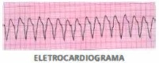
A Administrar lidocaína 1 mg/kg endovenosa.
B Realizar cardioversão sincronizada com 1 J/kg.
C Administrar amiodarona 5 mg/kg endovenosa.
D Realizar desfibrilação com 2 J/kg.
Questão 31 · Pediatria · Arritmias · 4000143893Adolescente, 12 anos, sexo masculino, comparece a UBS solicitando um atestado para realizar atividade física. No momento, sem queixas, sem histórico familiar de alteração cardíaca. Exame físico sem alterações. Traz um exame de ECG que foi realizado há 01 ano, quando precisou realizar uma cirurgia de desvio de septo nasal e no laudo consta arritmia sinusal. Para esse caso você:
A Realizada Ecocardiograma
B Encaminha para parecer da cardiologia
C Libera a atividade física
D Solicita teste inclinação ortostática
Questão 32 · Taquicardia Supraventricular TSV · 4000142174Uma paciente de 11 anos de idade deu entrada na unidade de pronto atendimento com queixa de mal-estar. Na triagem, apresenta FC = 230 bpm, FR = 28 irpm, SatO2 = 97% em AA, T = 37,2 ºC e pressão arterial no P50. A enfermeira rapidamente transferiu a paciente para a sala de emergência e solicitou avaliação médica. Ao exame físico, ela mostra-se em BEG, corada, hidratada; cardio: búlhas rítmicas normofonéticas tipo 2 sem sopros audíveis, taquicárdica; pulmonar: murmúrio ventricular presente, simétrico, sem ruídos adventícios e sem sinais de desconforto. Veri cam-se abdome plano, ruídos hidroaéreos presentes, ácido, sem visceromegalias, indolor; e também pulsos cheios, tempo de enchimento capilar < 3 seg. Ao exame neurológico, encontra-se em Glasgow 15, ativa, reativa ao exame, com pupilas isocóricas e fotorreagentes, sem sinais focais, sem sinais meníngeos e com pele íntegra. Realizou-se eletrocardiograma no qual se encontra ausência de onda P, QRS estreito e regular, e frequência cardíaca não variável = 230 bpm. Nesse caso clínico, o diagnóstico e a medicação indicada são.
A bradicardia sinusal e epinefrina.
B taquicardia ventricular e amiodarona.
C taquicardia sinusal; contudo, sem medicação específica, deve-se pesquisar e tratar a causa.
D fibrilação atrial e milrinona.
E taquicardia supraventricular e adenosina.
Questão 33 · Emergências Pediátricas Parada Cardiorrespiratória PCR e Arritmias na Emergência · Pediatria · 4000141150Menino, 2a, é trazida à Emergência em parada cardiorrespiratória (PCR). A checagem de ritmo identifica assistolia. O PRINCIPAL BENEFÍCIO EM INTUBAR O PACIENTE NESTE TIPO DE PCR, NO QUE DIZ RESPEITO AO RETORNO DA CIRCULAÇÃO ESPONTÂNEA, É:
A Permitir que as compressões torácicas sejam realizadas sem interrupções, otimizando a perfusão coronariana.
B Evitar a distensão gástrica e restrição de expansibilidade pulmonar secundárias ao uso do ressuscitador manual.
C Oferecer oxigenação e ventilação de forma mais eficiente, visto que a hipóxia é a causa mais frequente de PCR pediátrica.
D Ter uma via para administração de medicações (endotraqueal) rápida e segura.
Questão 34 · Rítmo Cardíaco · Pediatria · Terapia Farmacológica · 4000141070Menino de 1 ano dá entrada na sala de emergência, trazido pela equipe do SAMU, em parada cardiorrespiratória. Iniciada massagem cardíaca, ventilação e acesso vascular. A monitorização mostra assistolia. A seguir, a conduta mais adequada é:
A realizar cardioversão eletríca.
B administrar epinefrina 0,01 mg/kg.
C administrar atropina 0,02 mg/kg.
D iniciar expansão com 20 mL/kg de solução fisiológica.
E infundir bicarbonato de sódio na dose de 1 mEq/kg.
Questão 35 · Pediatria · Suporte Básico de Vida · 4000139885Sobre suporte básico de vida em pediatria, assinale a alternativa correta.
A A ressuscitação cardiopulmonar (RCP) em bebês e crianças com ventilações de resgate deve ser iniciada, em vez de compressões torácicas, respeitando A-B-C.
B Em lactente com apneia e pulso central ausente, deve-se iniciar a RCP e checar o pulso a cada 4 min.
C Se a criança apresentar apneia com pulso central presente, deve ser realizado ventilação de resgate, sendo 1 ventilação a cada 10 segundos, totalizando 6 ventilações por minuto.
D Se houver 2 socorristas, deve ser iniciada a RCP com a proporção de 30 compressões para 2 ventilações (30:2).
E Em lactente com bradipneia, pulso central presente com 50 batimentos por minuto e perfusão periférica ruim, mesmo após ventilação de resgate, deve ser iniciada a RCP.
Questão 36 · Emergências Pediátricas Parada Cardiorrespiratória PCR e Arritmias na Emergência · Pediatria · 4000138652A principal causa de parada cardiovascular em crianças é o(a)
A cardiopatia congênita.
B hipóxia.
C arritmia.
D infarto agudo do miocárdio.
E pneumopatia.
Questão 37 · Quadro Clínico · 4000129675Leia o caso clínico a seguir. Lactente com 11 meses de idade, sem febre ou história de doença prévia, é levado pelo pai ao pronto-socorro, com relato de que brincava junto com o irmão de cinco anos num quarto de brinquedos em sua casa, sem supervisão contínua de um adulto, quando o pai – que é médico generalista – ouviu tosse persistente, seguida de estridor e broncoespasmo. Ao chegar no quarto, o pai também observou que a criança estava cianótica. Nesse caso, qual é a principal hipótese diagnóstica?
A Envenenamento.
B Crise asmática.
C Ingestão acidental de corpo estranho.
D Laringotraqueobronquite bacteriana.
Questão 38 · Emergências Pediátricas Parada Cardiorrespiratória PCR e Arritmias na Emergência · Pediatria · 4000130348Menina, 5a, chega ao Pronto Socorro em parada cardiorrespiratória (PCR) em assistolia. Ao nal de um ciclo de reanimação cardiopulmonar (RCP), checa-se o ritmo, sendo identi cado ritmo sinusal. Exame físico: FC= 50 bpm; pulso periférico: no e tempo de enchimento capilar = 5 segundos. A CONDUTA É:
A Manter RCP de alta qualidade por mais um ciclo de 2 minutos.
B Administrar atropina.
C Administrar epinefrina (1:1000).
D Suspender a RCP e observar a monitorização, com ênfase na ventilação.
Revisar: possível letra faltando em enunciado
Questão 39 · Emergências Pediátricas Parada Cardiorrespiratória PCR e Arritmias na Emergência · Pediatria · 4000123381Criança de 3 anos, ao colocar inadvertidamente um prego em uma tomada, sofreu choque elétrico intenso, resultando em parada cardiorrespiratória. Levada à Emergência, foram efetuadas manobras de reanimação cardiopulmonar (ventilação e compressões torácicas). Na primeira verificação do ritmo cardíaco após a internação, identificou-se fibrilação ventricular. Neste momento, a conduta inicial é
A administrar adrenalina intravenosa (IV).
B administrar amiodarona IV.
C administrar lidocaína IV.
D realizar cardioversão.
E realizar desfibrilação.
Questão 40 · Causas de PCR · 4000120267Um paciente com oito meses de vida teve inúmeros episódios de diarreia há cinco dias, associada a vômitos e à febre. Foi levado ao pronto-socorro por sua mãe após dois dias do início do quadro e ela recebeu apenas orientações e prescrição de sintomáticos para realizar terapia de reidratação oral em casa. O paciente teve piora da diarreia e diminuição da diurese, evoluindo com irritabilidade e febre. Foi levado novamente ao pronto-socorro, agora em mau estado geral, afebril, letárgico, com frequência respiratória de 64 ipm, saturação de oxigênio de 88%, frequência cardíaca de 180 bpm, pulsos periféricos nos, enchimento capilar de 4 s e pressão arterial de 69 x 40 mmHg. Exames iniciais mostraram: Na 144 mEq/L; K 5,6 mEq/L; Cl 100 mEq/dL; pH 7,21; Bic 12 mmol/L; e Gli 65 mg/dL. Durante expansão inicial com SF 0,9% em via intraóssea, o paciente apresentou PCR em assistolia. Nesse caso hipotético, considerando a principal causa reversível dessa PCR, a melhor conduta será
A administrar bicarbonato de sódio devido à hipercalemia.
B intensificar a hidratação, pois a principal causa reversível é a hipovolemia.
C realizar push de glicose para reverter a hipoglicemia.
D realizar intubação orotraqueal devido à hipoxemia.
E administrar bicarbonato de sódio para reverter a acidose metabólica.
Questão 41 · Taquicardia Supraventricular TSV · 4000119933Lactente de 3 meses é levado à emergência com quadro de choro excessivo, recusa alimentar e respiração ofegante, com “batedeira” há 3 horas. É levado para a sala de emergência e monitorado, sendo obtido o eletrocardiograma abaixo. Ao exame físico o paciente encontra-se irritado, agitado, com tempo de enchimento capilar de 7 segundos, pulsos periféricos finos e PA: 57 32 mmHg. Dentre os tratamentos abaixo, a melhor conduta inicial é:

A Manobras vagais, como compressão do globo ocular ou estimulação do seio carotídeo.
B Administração de adenosina intravenosa, na dose inicial de 0,1 mg/kg,
C Cardioversão elétrica sincronizada, com carga inicial de 2-4 J/kg.
D Desfibrilação imediata com carga inicial de 2-4 J/kg.
E Soro fisiológico 20 mL/kg em seringa.
Questão 42 · Emergências Pediátricas Parada Cardiorrespiratória PCR e Arritmias na Emergência · 4000119926Suporte Avançado de Vida Uma criança de 7 anos, 20 kg, arresponsiva e sem pulso, apresenta o seguinte ritmo no traçado do ECG mostrado abaixo. Dentre as hipóteses abaixo, a principal hipótese diagnóstica e sua causa são, respectivamente,

A Atividade elétrica sem pulso e hipóxia.
B Assistolia e hipotermia.
C Taquicardia ventricular sem pulso e acidose.
D Taquicardia sinusal e sepse.
E Taquicardia supraventricular e febre.
Questão 43 · Emergências Pediátricas Parada Cardiorrespiratória PCR e Arritmias na Emergência · 4000119915Suporte Básico de Vida Um lactente de 6 meses, sexo masculino, é levado no colo da mãe após engasgo. Encontra-se não responsivo e sem pulsos. Após chamar ajuda, a melhor conduta imediata, dentre as abaixo, é:
A Iniciar imediatamente compressões torácicas, entre 100 a 120 por minuto.
B Iniciar ventilações com bolsa-valva-máscara (BVM), em frequência de 40-60 por minuto.
C Administrar adrenalina na dose de 0,1 mg/kg da solução diluída 1:10.000.
D Levar até a sala de emergência e checar o ritmo antes de tomar alguma conduta.
E Intubação orotraqueal
Questão 44 · Suporte Básico de Vida · Desf ibrilador Externo Automático DEA · 4000115258Em uma reanimação cardiopulmonar em ambiente hospitalar, quando houver a indicação de uso do des brilador manual, estará indicado o uso de pás pediátricas se
A o peso do paciente for inferior a 10 kg ou idade menor que 1 ano.
B o paciente não tiver caracteres sexuais secundários, como pelos ou mamas.
C a carga a ser aplicada para a desfibrilação for inferior a 40 J.
D a idade for menor de 12 anos ou a altura inferior a 1,50 m.
E a distância entre as duas pás for menor que 5 cm devido ao tórax pequeno.
Questão 45 · Taquicardia Supraventricular TSV · 4000108934Paciente de 10 anos vem ao pronto-socorro com queixa de mal-estar súbito. Ao exame físico, paciente corado, sem desconforto respiratório, pressão arterial no percentil 50 para a idade, com taquicardia importante. Realizada monitorização cardíaca, com frequência de 223 bpm e identificado o traçado abaixo: A conduta inicial para o caso deve ser:

A Sulfato de magnésio
B Manobra vagal
C Atropina
D Epinefrina
Questão 46 · Taquicardia Supraventricular TSV · 4000108917Paciente de 10 anos vem ao pronto-socorro com queixa de mal-estar súbito. Ao exame físico, paciente corado, sem desconforto respiratório, pressão arterial no percentil 50 para a idade, com taquicardia importante. Realizada monitorização cardíaca, com frequência de 223 bpm e identificado o traçado abaixo: Qual o diagnóstico do quadro acima?
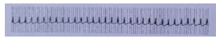
A Fibrilação Ventricular
B Taquicardia sinusal
C Taquicardia supraventricular estável
D Torsades de Pointes
Questão 47 · Emergências Pediátricas Parada Cardiorrespiratória PCR e Arritmias na Emergência · Causas de PCR · 4000107753Um paciente internado na enfermaria, com 8 anos de vida e peso de 25 kg, subitamente perde a consciência. A enfermeira estava próxima, detectou a ausência de pulso e iniciou as compressões torácicas, enquanto a criança era monitorada. Ao chegar, o pediatra solicitou a interrupção das compressões para ver o seguinte ritmo: Algumas causas reversíveis que podem ser tratadas durante a reanimação cardiopulmonar são:

A Acidose respiratória e Hipomagnesemia.
B Trauma e alcalose metabólica.
C Hipotermia e hiperlactatemia.
D Hipoglicemia e hipercalemia.
E Hipomagnesemia e febre.
Questão 48 · Taquicardia sinusal · Taquiarritmia Sinusal · Cardiologia · 4000095874Lactente com um ano de idade apresenta história de febre e frequência cardíaca: 200 bpm. No eletrocardiograma, o traçado demonstra ondas p normais seguidas de QRS (≤ 0,09s); o intervalo P-R é constante. Diante dessas características trata-se de quadro de:
A Taquicardia sinusal.
B Taquicardia supraventricular.
C Taquicardia ventricular.
D Taquicardia secundária.
Questão 49 · Taquicardia Supraventricular TSV · 4000042378Criança de 7 meses de vida, apresenta febre baixa há 5 dias associada à tosse, evoluindo com respiração ofegante e mais choroso que o habitual. Levada em atendimento, apresentava taquipneia e estertoração em base de hemitórax à esquerda. Durante a internação para tratamento da pneumonia, o médico foi acionado para avaliar a paciente, que evoluiu de forma súbita com palidez e agitação. Ao exame, observada taquicardia e extremidades frias. Realizado o eletrocardiograma, visto abaixo. Sobre o caso clínico, é correto afirmar:
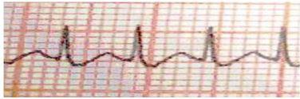
A Trata-se de taquicardia sinusal, com indicação de manobra vagal.
B O eletrocardiograma demonstra ritmo compatível com taquicardia supraventricular, estando indicada adenosina endovenosa.
C Trata-se de taquicardia supraventricular, devendo ser realizada desfibrilação elétrica.
D Trata-se de taquicardia ventricular sustentada, estando indicada cardioversão elétrica.
E Deve ser aferida a temperatura do paciente por se tratar de taquicardia sinusal provavelmente associada à febre.
Questão 52 · Emergências Pediátricas · 4000121007Emergências Pediátricas Parada Cardiorrespiratória PCR e Arritmias na Emergência Um menino de doze anos de idade, asmático, com crises não controladas, apresentou quadro de tosse e cansaço há um dia, sem febre. Iniciou, nesse dia, em casa, salbutamol e prednisona, mas manteve quadro de tosse importante e piora da dispneia. Depois de uma hora desse quadro, sua mãe chamou o SAMU. Durante o transporte, apresentou parada respiratória, iniciando ventilação bolsa-valva-máscara com oxigênio a 100%. À entrada na emergência, foi realizada intubação orotraqueal com cânula 6,5, com Cu , sem intercorrências. Foi colocado em ventilação pulmonar mecânica, modo assistido/controlado (PINSP 30 cmH2O, PEEP 5 cmH₂O, FR de 16 rpm e FiO₂ de 100%), apresentando saturação de O₂ de 85%, ausculta com diminuição de murmúrio vesicular à direita e sibilos difusos à esquerda. Evoluiu, após dez minutos, com parada cardíaca em atividade elétrica, sem pulso. Nesse caso hipotético, além das manobras de ressuscitação e epinefrina, deve-se considerar, na tentativa de reversão do quadro,
A desfibrilação com 2 J/kg.
B punção de provável pneumotórax.
C administração de bicarbonato de sódio se a reanimação for prolongada.
D troca da cânula orotraqueal por uma de maior tamanho, sem Cuff.
E aumentar PEEP para 8 cmH2O e FR para 20 rpm.
Questão 53 · Emergências Pediátricas Parada Cardiorrespiratória PCR e Arritmias na Emergência · 4000118144Abordagem do paciente em parada cardiorrespiratória PCR Com relação à reanimação cardiopulmonar em crianças, é correto afirmar:
A A recomendação atual é que o tempo limite de reanimação seja de 20 minutos.
B A frequência de ventilações deve ser 10 a 15 por minuto.
C A via intraóssea deve ser utilizada somente em crianças menores de 3 anos.
D As compressões torácicas podem ser interrompidas no máximo por 10 segundos.
E Para desfibrilação manual, uma carga inicial de 5 J/Kg é aceitável.
Questão 54 · Suporte Básico de Vida · Suporte Avançado de Vida · Causas de PCR · 4000115078Para a abordagem adequada da Parada Cardiorrespiratória (PCR), é fundamental conhecer qual é o ritmo associado ao evento. O ritmo cardíaco mais comumente verificado em crianças com PCR é a:
A Assistolia.
B Taquicardia ventricular sem pulso.
C Fibrilação ventricular.
D Atividade elétrica sem pulso.
E Fibrilação atrial.
Questão 55 · Rítmo Cardíaco · Terapia Farmacológica · Suporte Avançado de Vida · 4000106292Você é chamado(a) para a sala de emergência pediátrica e, ao entrar, encontra seu colega plantonista realizando a ressuscitação cardiopulmonar de uma criança de 8 anos de idade. Vocês realizam os ciclos de compressão/ventilação na razão de 15:2. O enfermeiro coloca o monitor cardíaco, obtendo o seguinte ritmo: é realizada a des brilação com 2 J/kg e, em seguida, é administrada uma dose de epinefrina 0,01 mg/kg. É realizada uma segunda verificação do ritmo cardíaco, mantido mesmo achado, sendo feita uma nova des brilação com 4 J/kg. Considerando que o ritmo se mantenha na próxima checagem, a próxima droga indicada
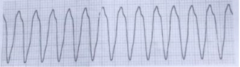
A Gluconato de cálcio
B Atropina
C Sufato de magnésio.
D Amiodarona
Questão 56 · Taquicardia Supraventricular TSV · 4000105870Criança com 3 anos de idade apresentando apatia e cansaço aos grandes esforços há 4 dias, hoje apresentou dor em região de tórax anterior com queda do estado geral. Ao exame: mau estado geral, acianótico, anictérico, afebril, hidratado. Tórax: murmúrio vesicular simétrico, sem ruídos adventícios, frequência respiratória = 30 mvm. Aparelho cardiovascular: 2 bulhas rítmicas normofonéticas sem sopros, frequência cardíaca difícil de aferir, tempo de enchimento capilar = 5 segundos, pressão arterial = 70 x 35 mmHg, pulsos periféricos nos. Abdome: plano, normotenso, indolor, fígado no rebordo costal direito, ruídos hidroaéreos positivos, normoativos. Sistema nervoso: sonolento. O eletrocardiograma é apresentado a seguir. Qual a conduta imediata para este paciente?
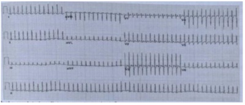
A Cardioversão elétrica não sincronizada com 2 J/kg
B Cardioversão elétrica sincronizada com 1 J/kg
C Cardioversão química com amiodarona 5 mg/kg
D Cardioversão química com lidocaína 1 mg/kg
Questão 57 · Tratamento · Diagnóstico · 4000105775P.J.D, 4 anos, sexo masculino, é trazido ao pronto-socorro pela mãe que refere que paciente estava brincando com as peças de lego do seu irmão quando apresentou crise de tosse seguido de episódio de cianose. Ao exame físico, criança encontra-se em ótimo estado geral, acianótico, FR = 20 irpm, FC = 120 bpm, ausculta pulmonar com murmúrios vesiculares bilateralmente. Realizada radiografia de tórax. A melhor conduta é:
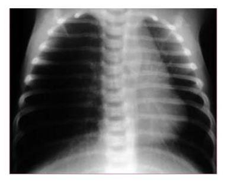
A Broncoscopia.
B Endoscopia.
C Laringoscopia indireta.
D Acompanhamento radiológico em 24 horas.
E Tomografia de tórax.
Questão 58 · Emergências Pediátricas Parada Cardiorrespiratória PCR e Arritmias na Emergência · 4000102201Suporte Avançado de Vida Uma criança, com 5 anos de idade e pesando 20Kg, está na emergência devido a insu ciência respiratória por crise asmática, quando sofre uma parada cardiorrespiratória em taquicardia ventricular sem pulso. Ao iniciar reanimação cardiopulmonar, você solicita:
A Desfibrilação 40 joules
B Cardioversão 20 joules
C Desfibrilação 20 joules
D Cardioversão 40 joules
Questão 59 · Emergências Pediátricas Parada Cardiorrespiratória PCR e Arritmias na Emergência · 4000091999Suporte Básico de Vida Em relação à Ressuscitação Cardiopulmonar (RCP), segundo as diretrizes de RCP da American Heart Association (AHA) de 2010, e reforçada em 2015, na faixa etária pediátrica, é CORRETO afirmar que:
A A sequência de atendimento recomendada por essas diretrizes inclui a palavra mnemônica ACB, que significa (A) abertura via aérea, (C) compressão torácica e (B) boa respiração.
B A checagem de pulso central não deve ultrapassar 10 segundos. Em lactentes, é recomendado pulso carotídeo e femoral e, em crianças e adolescentes, o pulso branquial.
C Na presença de dois ou mais socorristas, o rodízio das funções deve ser realizado a cada 4 minutos para minimizar a fadiga do ressuscitador.
D Os ritmos cardíacos mais frequentes que indicam RCP, em pediatria, são arritmias ventriculares como fibrilação ventricular e taquicardia ventricular sem pulso.
E Na presença de dois ou mais socorristas no atendimento de crianças e lactentes, é recomendada a relação compressão/ventilação 15:2. Já na presença de 1 socorrista, é recomendada a relação compressão/ventilação 30:2.
Questão 60 · Taquiarritmias · Taquicardia Supraventricular TSV · 4000083762Paciente com nove anos, hígido previamente, é admitido no pronto-socorro por sudorese e palpitações de início súbito. Está afebril e normotenso, com saturação de hemoglobina de 96%, taquicardia 210 bpm e velocidade de enchimento capilar de dois segundos. O eletrocardiograma revela ritmo regular com complexos QRS estreitos. O tratamento adequado para essa situação clínica é:
A Propranolol, via oral.
B Adenosina, intravenosa.
C Noradrenalina, intravenosa.
D Milrinona, via oral.
Questão 61 · Diagnóstico · 4000051088Lactente de 1 ano e 9 meses é trazida para consulta com pediatria. Mãe relata que nos últimos 6meses a criança apresentou 3 episódios confirmados radiologicamente de pneumonia em pulmão direito, sendo 2 deles com necessidade de internamento. Anteriormente aos quadros de pneumonia, era hígido. Apresenta bom desenvolvimento e ganho de peso. História obstétrica e neonatal sem particularidades. Pais e irmão sem história de doenças respiratórias. Diante disto, assinale a hipótese diagnóstica mais provável para o caso.
A Imunodeficiência
B Fibrose cística
C Aspiração de corpo estranho
D Tuberculose
E Asma
Questão 62 · Taquicardia Supraventricular TSV · 4000050599Paciente de 4 meses de vida é atendido em pronto-socorro. A mãe refere que o paciente está há um dia com di culdade nas mamadas e irritabilidade. Também refere palidez. Durante exame físico, observa-se que o paciente se encontra taquicárdico com FC de 240 bpm, normotenso, com tempo de enchimento capilar de 2 segundos e pulsos médios. Segue o eletrocardiograma realizado. Em relação ao caso descrito, assinale a alternativa correta.
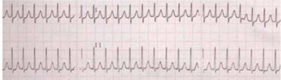
A Deve-se realizar a desfibrilação com uma carga de 2J/kg, por se tratar de um quadro de fibrilação ventricular.
B Como o paciente apresenta ritmo sinusal, o diagnóstico é de taquicardia sinusal, sem necessidade de tratamento medicamentoso.
C Deve-se administrar adenosina em bólus rápido na tentativa de reverter o quadro de taquicardia supraventricular.
D Trata-se de taquicardia ventricular, estando indicada a administração de amiodarona na dose de 5mg/kg.
Questão 63 · Tratamento da Crise Aguda · Avaliação da Criança Gravemente Enf erma · 4000049050Uma criança de sete anos de idade foi levada à emergência por falta de ar e chiado no peito há um dia. A mãe referiu história de asma, com uso de corticoide inalatório e salbutamol, que foi interrompido nas férias, há quinze dias. Encontra-se afebril, com pulso de 128 bpm, frequência respiratória de 40 mpm e pressão arterial de 100/80 mmHg. Na ausculta, sibilos inspiratórios e expiratórios em ambos os campos pulmonares, com retração intercostal e subcostal. Após tratamento com albuterol nebulizador e metilprednisolona endovenosa, sem melhora, a criança apresenta-se letárgica e apática, com FC de 150 bpm, PA de 100/70 mmHg e FR de 22 movimentos por minuto. Não se auscultam mais sibilos. Com base nesse caso hipotético, assinale a alternativa que apresenta a conduta mais apropriada para o manejo da criança.
A introduzir antagonistas de receptor de leucotrienos
B epinefrina inalatória
C repetir metilprednisolona
D intubação e ventilação mecânica
E realizar broncoscopia
Questão 64 · Taquicardia Supraventricular TSV · 4000035976Um menino de um ano é levado ao pronto-socorro para ser avaliado por inapetência, agitação e sudorese. Na impressão inicial, ele se mostra letárgico, mas consegue despertar, tem di culdade para respirar e apresenta-se cianótico. A primeira avaliação releva frequência respiratória de 68 irpm, frequência cardíaca de 300 bpm que não varia com atividade ou sono, pressão arterial de 70 x 45 mmHg, pulso braquial fraco e pulso radial ausente, enchimento capilar de 6 segundos, SatO2 de 85% em ar ambiente e ruídos respiratórios bilaterais bons. Você administra oxigênio de alto uxo e coloca a criança no monitor cardíaco. Não há histórico de doença cardíaca congênita. Você observa o seguinte ritmo com pouca variabilidade da frequência cardíaca entre batimentos: o acesso EV foi estabelecido. Qual das seguintes terapias é a mais adequada para esta criança?
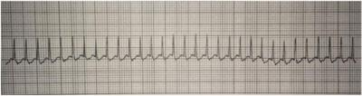
A Marcar uma consulta com o cardiologista pediátrico para o fim da semana.
B Infusão rápida de adenosina 0,1 mg/Kg EV; se a adenosina não estiver disponível imediatamente, realizar cardioversão sincronizada.
C Realizar desfibrilação imediata sem esperar por acesso IV.
D Estabelecer acesso IV e administrar um bolus de 20 ml/K g de fluido cristalóide isotônico.
Questão 65 · Manobra de Heimlich · Pneumologia · 4000025780A manobra de Heimlich é indicada na tentativa de desobstrução das vias aéreas superiores. Para quem ela está indicada e como é realizada?
A Para todas as crianças. São realizadas compressões abdominais.
B Para todas as crianças. São realizadas compressões torácicas.
C Para as crianças maiores de um ano. São realizadas compressões abdominais.
D Para as crianças maiores de um ano. São realizadas compressões torácicas.
Questão 66 · Terapia Farmacológica · 4000024705A adrenalina quando administrada como terapia na reanimação de parada cardíaca tem como objetivo promover:
A vasoconstricção venosa.
B aumento da resistência vascular arterial.
C efeito beta-adrenérgico periférico.
D aumento dos efeitos broncodilatadores.
Questão 67 · Arritmias · 4000020046Pré-escolar, masculino, 5 anos de idade, está internado para a correção cirúrgica de hérnia inguinal. Ao ser examinado, notou-se que a frequência cardíaca era irregular, sem outras anormalidades no exame físico. O Eletrocardiograma (ECG) demonstra o seguinte traçado. Após análise do eletrocardiograma, o diagnóstico é:
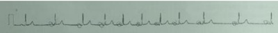
A Arritmia sinusal.
B Bloqueio AV de 1° grau.
C Bloqueio AV de 2° grau.
D Bloqueio de ramo direito.
Questão 68 · Respiração e Pulso · Respondividade · Vias aéreas · 4000019877Você está fazendo compras no shopping e encontra escolar, aparentando ter entre 8 a 9 anos de idade, deitado no chão e parece inconsciente. Diante desse cenário, seguindo as Diretrizes de Ressuscitação Cardiopulmonar (RCP) 2015, deve-se:
A Chamar por ajuda (192) e solicitar desfibrilador externo automático (DEA), afastar curiosos da cena, checar pulso carotídeo e logo após checar respiração e, se ausentes, iniciar compressões torácicas: ventilações (CT:V = 30:2).
B Avaliar a responsividade da vítima. Se não responde, chamar por ajuda (192) e solicitar DEA, checar pulso carotídeo e respiração simultaneamente e, se ausentes, iniciar compressões torácicas: ventilações (CV:T = 30:2).
C Afastar curiosos da cena, checar pulso carotídeo e, logo após, checar respiração e, se presentes, solicitar ajuda pra quem tem carro, transportar a vítima para o carro do ajudante e levá-la imediatamente para o pronto-socorro mais próximo.
D Avaliar a responsividade da vítima. Se não responde, chamar por ajuda (192) e solicitar DEA, checar pulso carotídeo e respiração de modo simultâneo e, se ausentes, iniciar compressões torácicas: ventilações (CT: V = 15:2), se você tiver dispositivo de barreira. Se não possuir esse dispositivo, manter somente compressões torácicas 100 a 120/minuto.
Questão 69 · Emergências Pediátricas · Causas de PCR · 4000018230Criança de 5 anos foi encontrada inconsciente na piscina por vigilante de um condomínio e foi removida rapidamente para a unidade de pronto atendimento. Não se sabe o tempo de duração do afogamento. Qual é a causa mais comum de morbimortalidade em hospitalizados afogados?
A Distúrbio hidroeletrolítico por aspiração de água.
B Insuficiência cardíaca com edema agudo de pulmão.
C Laringoespasmo seguido de relaxamento da laringe com aspiração de água.
D Desenvolvimento de encefalopatia por hipóxia, com ou sem edema cerebral.
Questão 70 · Atualizações · Emergências Pediátricas · 4000127538Emergências Pediátricas Parada Cardiorrespiratória PCR e Arritmias na Emergência Sobre reanimação cardiopulmonar em pediatria, é correto afirmar que:
A As compressões torácicas devem ter profundidade de aproximadamente 3/4 dodiâmetro anteroposterior do tórax.
B O ritmo mais frequente de parada cardiorrespiratória em crianças de 0 a 8 anos étaquicardia ventricular sem pulso.
C O ritmo mais frequente de parada cardiorrespiratória em crianças de 0 a 8 anos é aatividade elétrica sem pulso.
D O socorrista leigo deve utilizar a manobra de elevação do mento para abrir a via aéreados pacientes.
E O socorrista leigo deve utilizar a manobra de tração da mandíbula para abrir a viaaérea do paciente.
Questão 71 · Emergências Pediátricas · 4000125403Emergências Pediátricas Parada Cardiorrespiratória PCR e Arritmias na Emergência A equipe do SAMU que atendeu a criança acima trouxe o des brilador manual que mostrou: Qual o ritmo e qual a conduta mais apropriada?
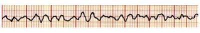
A Trata-se de fibrilação ventricular. Indicado realizar o choque sincronizado 0,5 – 1 Joule/kg e reiniciar compressões torácicas.
B Trata-se de fibrilação ventricular. Indicado realizar o choque não sincronizado 2 Joules/kg e reavaliar pulso central e, se persistir mesmo ritmo, repetir choque não sincronizado 4 Joules/kg.
C Trata-se de taquicardia ventricular sem pulso. Indicado realizar o choque não sincronizado 2 Joules/kg e reiniciar compressões torácicas.
D Trata-se de fibrilação ventricular. Indicado realizar o choque não sincronizado 2 Joules/kg e reiniciar compressões torácicas.
E Trata-se de taquicardia ventricular sem pulso. Indicado realizar o choque sincronizado 2 Joules/kg e reiniciar compressões torácicas.
Questão 72 · Respiração e Pulso · Respondividade · Vias aéreas · 4000125402Criança, 4 anos, estava brincando no parque e você a viu cair subitamente, inconsciente. Ao tentar chamá-la, percebe que ela está arresponsiva, não respira e seu pulso central não é palpável. Você está sozinho. Qual é a conduta mais aceitável?
A Chamar ajuda, já iniciar as compressões torácicas sincronizadas com ventilação boca-a-boca 30:2, reavaliar pulso após cada 5 ciclos.
B Checar respiração, fazer 2 ventilações de resgate, rever pulso central, iniciar compressões sincronizadas com ventilação 30:2, reavaliar pulso após 5 ciclos.
C Checar respiração, fazer 2 ventilações de resgate, rever pulso central, iniciar compressões sincronizadas com ventilação 30:2, reavaliar pulso após 5 minutos.
D Chamar ajuda, já iniciar as compressões torácicas sincronizadas com ventilação boca-a-boca 30:2, reavaliar pulso após cada 10 ciclos.
E Chamar ajuda, já iniciar as compressões torácicas sincronizadas com ventilação boca-a-boca 15:2, reavaliar pulso após cada 5 ciclos.
Questão 73 · Emergências Pediátricas Parada Cardiorrespiratória PCR e Arritmias na Emergência · Pediatria · 4000124438Paciente de 7 anos encontra-se em atendimento na emergência em razão de uma parada cardiorrespiratória por assistolia. Após cerca de 5 minutos, observou-se ritmo organizado no monitor cardíaco. Qual a conduta a ser adotada imediatamente?
A Suspender as manobras de reanimação e administrar amiodarona por via intravenosa.
B Suspender as manobras de reanimação e otimizar a oxigenoterapia.
C Suspender as manobras de reanimação e realizar cardioversão elétrica sincronizada.
D Verificar o pulso central e, se ausente, administrar vasopressina e atropina ou lidocaína por via intravenosa ou intraóssea.
E Verificar o pulso central e, se ausente, manter as manobras rotineiras de reanimação.
Questão 74 · Tratamento · Corpo EstranhoEngasgo · 4000112006Numa tentativa de desobstrução por engasgo em lactente de nove meses de idade, assinale a alternativa ERRADA:
A Administrar cinco pancadas firmes entre as escápulas usando a base das mãos.
B Fazer compressões abdominais (manobra de Heimelich).
C Não tentar varredura digital à procura do corpo estranho na boca da criança.
D Segurar a criança em seu antebraço com o abdômen para baixo e a cabeça mais abaixada que o tórax.
Questão 75 · Emergências Pediátricas Parada Cardiorrespiratória PCR e Arritmias na Emergência · Pediatria · 4000109972Lactente de 1 ano é encontrado inconsciente no berço da creche. No local, há uma enfermeira que verifica não haver pulso central. Além de chamar ajuda, a primeira conduta a ser tomada é
A abrir a via aérea, inclinando a cabeça e elevando o queixo do bebê.
B iniciar ventilação com ambu e máscara.
C iniciar compressões torácicas.
D aplicar choque com desfibrilador portátil.
E realizar manobra de Heimlich.
Questão 76 · Emergências Pediátricas Parada Cardiorrespiratória PCR e Arritmias na Emergência · Pediatria · 4000103724Menino de 8 anos de idade estava no clube jogando futebol quando apresentou perda súbita de consciência. Foi avaliado imediatamente pelo médico do clube, que notou que a criança não respondia e não tinha pulso. O médico chamou ajuda e iniciou as compressões torácicas e ventilação, na relação de 30:2. Os maqueiros do clube levaram a criança até uma sala de emergência onde o médico do clube checou o ritmo cardíaco com as pás do monitor, obtendo o seguinte achado: Qual é a conduta para o caso nesse momento?
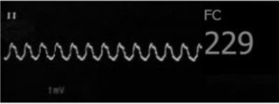
A Desfibrilação elétrica com carga de 2 J/kg.
B Choque sincronizado com carga de 4 J/kg.
C Amiodarona na dose de 5 mg/kg.
D Adenosina na dose de 0,6 mg/kg.
Questão 77 · Manobra de Heimlich · Corpo EstranhoEngasgo · 4000099788Criança, 6a, engasgou com um pedaço de bala dura. Não consegue falar e respirar efetivamente, tenta tossir mas não consegue. Mantém os olhos “arregalados” e as mãos no pescoço. A conduta imediata é:
A Deitar a criança no chão e iniciar reanimação cardiopulmonar.
B Varredura digital, às cegas, para retirar o corpo estranho.
C Dar golpes nas costas com a criança em decúbito lateral.
D Rápidas compressões em região epigástrica.
Questão 78 · Suporte Avançado de Vida · Causas de PCR · 4000083054Diante de uma criança em Parada Cardiorrespiratória (PCR), deve-se considerar que:
A A primeira avaliação do ritmo deve ser feita obrigatoriamente junto com o reconhecimento da própria PCR.
B O uso de gluconato de cálcio, intravenoso ou por infusão intraóssea, garante o melhor prognóstico nessas situações.
C A administração de adrenalina, intravenosa ou intratraqueal, somente está recomendada nas situações onde há presença de ritmos não chocáveis.
D Após a obtenção e garantia de via aérea avançada, a frequência respiratória a ser imposta ao paciente deverá ser 30 movimentos por minuto.
E No caso de PCR persistente, após a terceira dose de adrenalina intravenosa, está indicada uma dose de 1 ml de atropina intravenosa.
Questão 79 · Taquicardia Supraventricular TSV · 4000082951A droga de escolha para o tratamento inicial de uma criança com taquicardia supraventricular que se encontra em bom estado clínico geral e sem sinais de descompensação hemodinâmica é:
A Sulfato de magnésio.
B Adenosina.
C Amiodarona.
D Lidocaína.
E Propranolol.
Questão 80 · Respiração e Pulso · Respondividade · Introdução · 4000055252Um médico está passeando no Boulevard Shopping quando uma avó começa a gritar histericamente, pedindo por socorro porque seu neto de cinco anos estava brincando e desmaiou de repente. A impressão inicial mostra uma possível Parada cardiorrespiratória (PCR). De acordo com as normas de 2015 da AHA, o médico deve
A iniciar imediatamente a Ressuscitação Cardiorrespiratória pelas compressões torácicas.
B solicitar Monitorização Oxigênio e Veia, porque é a primeira medida a ser realizada em qualquer paciente gravemente enfermo.
C checar a Responsividade, chamar por ajuda e pedir o DEA, checar o pulso central e a respiração simultaneamente por no mínimo 5 e no máximo 10 segundos; se o pulso estiver ausente e a criança não respira ou na presença de gasping, iniciar as compressões torácicas e respiração boca a boca (30:2).
D iniciar imediatamente ventilação com pressão positiva e depois as compressões torácicas, considerando que a principal causa de PCR em Pediatria é a hipóxia.
E checar a Responsividade, chamar por ajuda e checar o pulso central e a respiração simultaneamente por no mínimo 5 e no máximo 10 segundos; se o pulso estiver ausente e a criança não respirar ou na presença de gasping, chamar por ajuda e pedir o DEA, iniciar as compressões torácicas e respiração boca a boca (15:2).
Questão 81 · Emergências Pediátricas Parada Cardiorrespiratória PCR e Arritmias na Emergência · Pediatria · 4000050751Sobre a parada cárdio-respiratória (PCR) na infância assinale as alternativas que se encontram corretas: I - O prognóstico da PCR na criança é melhor que no adulto; II - A principal causa de PCR hospitalar é a insuficiência respiratória; III - A relação entre massagem e ventilação deve ser de 30:2 em todas as idades e qualquer situação; IV - A frequência da massagem cardíaca deve ficar entre 100 e 120 por minuto.
A I e II apenas.
B II e III apenas.
C II e IV apenas.
D I, II e III apenas.
E II, III e IV apenas.
Questão 82 · Arritmias · 4000031652A carga inicial de uma cardioversão sincronizada em uma escolar de 6 anos, pesando 20 quilos, é:
A 4 J.
B 2 J.
C 8 J.
D 10 J.
E 6 J.
Questão 83 · Bloqueio Atriventricular · 4000029709A arritmia cardíaca neonatal que está associada com a passagem transplacentária de anticorpos maternos anti-Ro e anti-La é?
A Arritmia sinusal
B Extrassístole ventricular
C Taquicardia supraventricular
D Bloqueio atrioventricular
E Fibrilação atrial
Questão 84 · Síndrome de Lof f ler · Pneumologia Pediátrica · Diagnóstico Dif erencial · 4000026622Um pré-escolar de 5 anos é levado à unidade de pronto-atendimento pela mãe que relatou quadro de febre, tosse e cansaço há 48 horas. O exame físico revela ausculta pulmonar com estertoração localizada à direita. Raio-X de tórax: hipotransparência em hemitórax direito. Nos últimos 6 meses, é a terceira vez que apresenta os mesmos sintomas e imagem pulmonar no mesmo local. A mãe referiu que a criança sempre foi saudável. Na família, só a criança tem apresentado esses sintomas. O diagnóstico mais provável, para esse caso, é:
A Síndrome de Loeffler.
B Tumor endobrônquico.
C Aspiração de corpo estranho.
D Tuberculose pulmonar.
E Pneumonia atípica.
Questão 85 · Quadro Clínico · Diagnóstico · 4000098569Menino, 3a, chega à Unidade de Emergência Pediátrica com história de tosse, dificuldade respiratória e chiado no peito há 2 horas. A cuidadora nega febre ou quadro viral pregresso. No primeiro ano de vida, relata 3 episódios de sibilância, de curta duração, tratadas no domicílio com nebulização com droga beta 2 agonista. Exame físico: regular estado geral, FC= 130 bpm, FR= 54 irpm, oximetria de pulso (ar ambiente)= 89%; afebril; Pulmão: retração subcostal bilateral, diminuição da entrada de ar à esquerda e sibilos disseminados. Iniciada oxigenioterapia com máscara e nebulização com salbutamol. Radiograma de tórax (Conforme imagem do caderno de questões). A CONDUTA É:
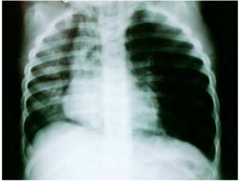
A Intubação endotraqueal.
B Manobra de desobstrução.
C Solicitar broncoscopia.
D Punção de tórax à direita.
Questão 86 · Taquicardia Supraventricular TSV · 4000090707Qual a droga de escolha para o tratamento da taquicardia supraventricular com pulso e perfusão adequadas na infância?
A Amiodarona.
B Procainamida.
C Adenosina.
D Adrenalina.
E Lidocaína.
Questão 87 · Acesso Vascular · 4000079115Assinale a assertiva correta em relação ao acesso intraósseo.
A É recomendado somente nos casos de parada cardiorrespiratória prolongada.
B Derivados sanguíneos como plasma e plaquetas não podem ser administrados por essa via.
C A osteomielite é uma complicação frequente, ocorrendo em um terço dos casos.
D Está indicado para lactentes, não devendo ser utilizado em crianças maiores.
E A porção anterior proximal da tíbia pode ser utilizada como local de acesso.
Questão 88 · Tratamento · Quadro Clínico · Diagnóstico · 4000058354Lactente 1 ano e 6 meses estava brincando no chão da cozinha, quando a sua mãe ouviu-a tossir intensa. Ela foi até a criança e notou, além da tosse intensa, apresentava cianose e estridor leves com tiragem e taquipneia. Antes desse momento, o menor apresentava-se bem e sem sintomas respiratórios. Foi atendida no pronto atendimento, apresentava-se taquipneico com redução do murmúrio vesicular em ápice direito, associado a alguns sibilos. Assinale o diagnóstico mais provável e terapêutica mais adequada para este caso.
A Bronquiolite viral aguda; oxigenoterapia e suporte.
B Crupe espasmódico; inalação com adrenalina
C Crise de asma; inalação com broncodilatador de curta duração.
D Pneumonia atípica; macrolídeos e inalação com broncodilatador de curta duração.
E Aspiração de corpo estranho; broncoscopia para visualização direta e retirada.
Questão 89 · Acesso Vascular · 4000057280Na parada cardiorrespiratória (PCR), nas raras situações em que não há acesso venoso ou intraósseo disponível, a via endotraqueal pode ser uma alternativa para um grupo de drogas. As medicações que podem ser utilizadas, via cânula endotraqueal, são:
A Amiodarona, naloxone, epinefrina e lidocaína.
B Atropina, naloxone, epinefrina e lidocaína.
C Adrenalina, noradrenalina, etomidato e linezolida.
D Atropina, noradrenalina, etomidato e lidocaína.
E Adrenalina, naloxone, etomidato e lidocaína.
Questão 90 · Taquicardia Supraventricular TSV · 4000053362Lactente de seis meses, sexo masculino, é trazido à emergência por sua mãe que relata que há 12 horas seu lho está irritado, mamando menos, pálido e suando muito. Não há relato de febre ou qualquer sinal de infecção. Exame físico: afebril, sugando a chupeta com ansiedade, pálido irritado, FC: 250bpm, pulsos palpáveis, FR: 60irpm, PA: 90 x 50mmHg, com boa entrada de ar nos pulmões, saturação de O2: 100% em ar ambiente. O monitor cardíaco evidencia complexos QRS estreitos com ausência de onda P. Após paciente ser colocado em oxigenioterapia, a droga de escolha a ser utilizada na reversão desse quadro é:
A Atropina.
B Lidocaína.
C Verapamil.
D Adenosina.
E Sulfato de magnésio.
Questão 91 · Taquicardia Supraventricular TSV · 4000027551Lactente de seis meses, sexo masculino, é trazido à emergência com irritabilidade, palidez, gemência e sudorese. Não há relato de febre ou qualquer sinal de infecção. Exame físico: afebril, sugando a chupeta com ansiedade, pálido, irritado, FC: 250bpm, pulsos palpáveis, FR: 64irpm, PA: 80 x 50mmHg, com boa entrada de ar nos pulmões, saturação de O2: 100% em ar ambiente. O monitor cardíaco evidencia complexos QRS estreitos com ausência de onda P. Após paciente ser colocado em oxigenioterapia, a droga de escolha a ser utilizada na reversão desse quadro é:
A Atropina
B Lidocaína
C Verapamil
D Adenosina
Questão 92 · Introdução · Rítmo Cardíaco · 4000007737Criança de 3 anos chega ao pronto-socorro trazido pelo serviço de resgate, com história de ter sido encontrado submerso em uma caixa d’água de 500 litros. A equipe está procedendo a reanimação cardiorrespiratória. Na chegada, é administrado epinefrina e identi cada ausência de pulsos. Baseado na imagem do ECG apresentado a seguir, (Conforme imagem do caderno de questões) o diagnóstico é:
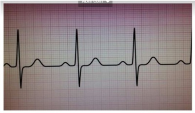
A Atividade elétrica sem pulso.
B Ritmo juncional.
C Assistolia devido à ausência de pulsos.
D Arritmia sinusal.
E Dissociação ventrículo-atrial.
Questão 93 · Emergências Pediátricas Parada Cardiorrespiratória PCR e Arritmias na Emergência · Pediatria · 4000128059Você é chamado para avaliar uma criança que desmaiou. Na avaliação inicial, é observado que a criança não respira e não apresenta pulsos detectáveis. Após a chegada do des brilador, é detectado no monitor o seguinte ritmo cardíaco (VER IMAGEM): Com base no traçado acima e na conduta a ser tomada, marque a alternativa correta:
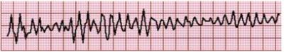
A Taquicardia supraventricular / Adenosina.
B Taquicardia sinusal / Pesquisar e tratar a causa.
C Fibrilação Ventricular /Choque de 2 J/kg.
D Taquicardia ventricular / Cardioversão sincronizada.
Questão 94 · Arritmias · 4000123732Paciente de 9 anos de idade, previamente hígido, desmaia enquanto estava de pé e tem breve perda de consciência. Repete o quadro no mesmo dia e tem crise convulsiva generalizada, de menos de 1 minuto de duração. Sem antecedentes pessoais e familiares compatíveis. Ao exame, glicemia: normal; FC = 50 bpm; RX de tórax normal; ECG: bloqueio atrioventricular 2:1 e complexo QRS amplos. O passo inicial mais apropriado é?
A Internação para monitoramento cardíaco.
B Solicitar Holter de 24 horas, monitorando ambulatorialmente.
C Solicitar ecocardiograma de urgência.
D Solicitar EEG ambulatorialmente.
E Internação para realização de curva glicêmica.
Questão 95 · Taquicardia Supraventricular TSV · 4000122114Um pré-escolar de 3 anos chega ao pronto-socorro com quadro de arritmia. O médico de plantão tenta induzir uma manobra vagal aplicando uma bolsa de gelo na face da criança. Essa criança provavelmente apresenta uma taquicardia:
A Ventricular hemodinamicamente estável.
B Supraventricular hemodinamicamente estável.
C Supraventricular hemodinamicamente instável.
D Ventricular sem pulso.
E Ventricular hemodinamicamente instável.
Questão 96 · Terapia Farmacológica · 4000064612A dose de adrenalina na reanimação pediátrica é:
A 1 mg/kg.
B 0,1 mg/kg.
C 0,01 mg/kg.
D 0,001 mg/kg.
E 0,0001 mg/kg.
Questão 97 · Introdução · 4000064602Em Pediatria, o ritmo mais frequentemente encontrado na parada cardiorrespiratória é:
A Assistolia.
B Fibrilação ventricular.
C Fibrilação atrial.
D Taquicardia ventricular.
E Taquicardia supraventricular.
Questão 98 · Taquicardia Supraventricular TSV · 4000009956Um lactente de 5 meses chega ao pronto-socorro com frequência cardíaca de 220 batimentos por minuto, pulsos palpáveis e enchimento capilar de 2 segundos. Levado para a sala de emergência, administrado oxigênio e observado no monitor cardíaco: QRS estreito (< 0,09s), intervalo R-P "menor ou igual a" 70ms e intervalo R-R constante. Qual das seguintes opções seria mais adequada? Respostas: 1 12 23 34 45 56 67 78 89
A Administração de gluconato de cálcio IV ou IO.
B Administração de epinefrina IV ou IO.
C Administração de bolus rápido de adenosina IV ou IO.
D Administração de atropina IV ou IO.
E Administração de sulfato de magnésio IV ou IO.